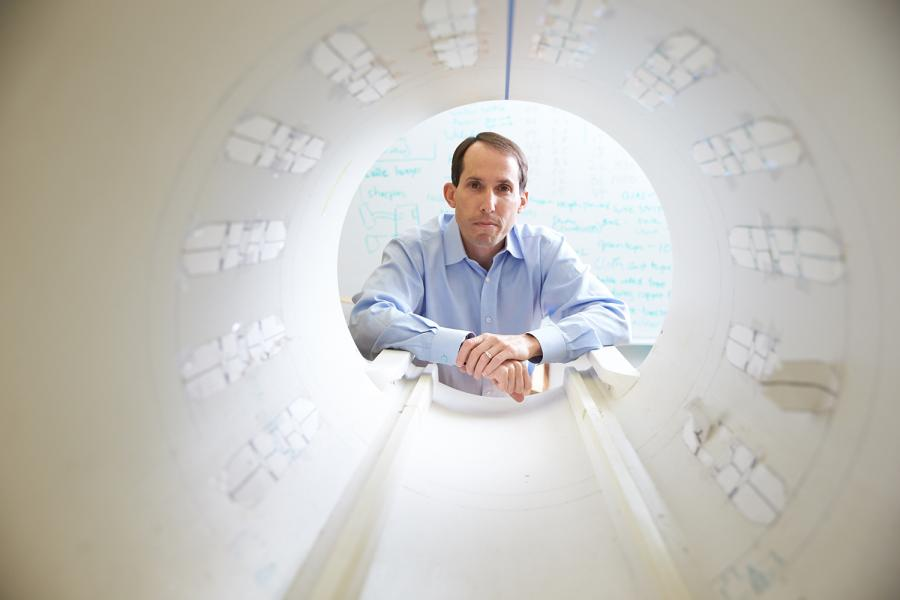
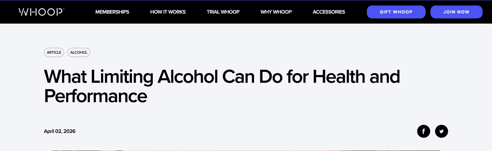
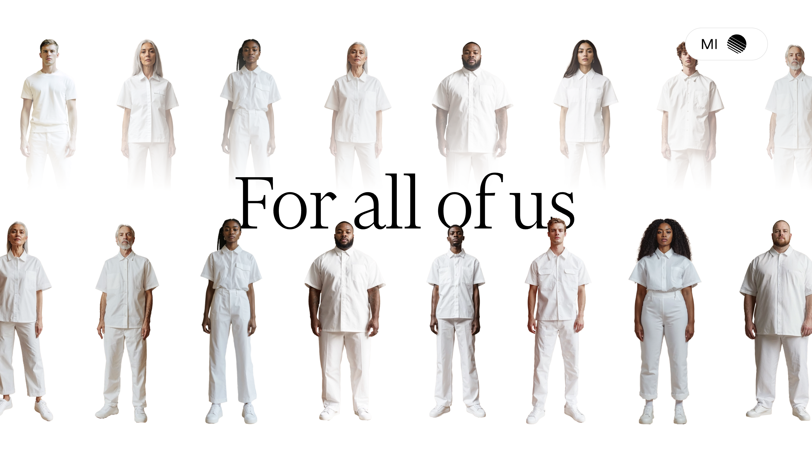

A working list of LinkedIn post ideas I think would land well..
Dan's LinkedIn
I think it's important to build your voice on LinkedIn while remaining authentic to your personality and experiences. It's refreshing when content is personal, insightful, and unique to the poster's perspective – this is why personal accounts can typically get more interactions than business accounts.
I'd like to give your profile a cover photo and biography section – expanding on your headline – so that when people visit the page, they immediately understand who you are, why your opinion matters, and why they should follow you. This will also help us to frame your content and ensure that it's consistent with your brand.
Content-wise, think: 1) short- and long-form commentaries on news or research (within the MI lab and beyond), 2) mentioning events you've attended, and 3) sharing stories about the team in the lab.
Examples:
01 Long-form content and commentaries
Why did I step away from academia after nearly three decades of research?
It's been six months since leaving NYU and founding the Medical Intelligence Lab at Function Health. I've written a post sharing the reasons why I decided to make the leap, and the vision I have for the lab.
📖 You can read the full post here [Link to post].

02 Reactions to news / research (this is just an example I saw this week)
Really interesting insights from WHOOP! They recently found that users are increasingly likely to change their drinking habits after seeing the impact of alcohol on their sleep and recovery metrics.
This is a great example of how long-term personalised health insights can drive behavioural change. If we can better track people's health over time, we can empower them to make better decisions and detect diseases earlier.
[Selling point here or call to action for the Medical Intelligence Lab].

Sources: WHOOP post.
Medical Intelligence Lab
The majority of posts should be sharing insights from the lab’s research, reiterating key principles when relevant news stories are published.
Examples:
03Callout piece
Proactive healthcare doesn't wait for patients to show up with symptoms before it acts. It uses personalised data collected over time to identify your unique changes early, allowing us to spot disease and intervene sooner.
The Medical Intelligence Lab by Function is bringing together experts across medicine, nutrition, sleep, movement, and intervention to build accessible tools, designed for a new era of prevention-focussed healthcare.
If you're interested in learning more about our vision to empower individuals with proactive healthcare, check out our website here.

04 Hiring/team focussed piece
OUR TEAM IS GROWING!
A survey of doctors in the US recently ranked medical imaging as the technology they could least afford to lose.
In the Medical Intelligence Lab, we're building new ways to monitor and predict disease by integrating AI and cutting-edge imaging techniques.
👉 If you're a machine learning engineer interested in changing the way healthcare operates, check out our open roles here.